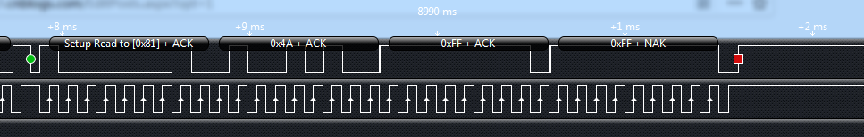
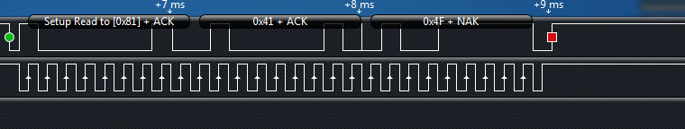

原文出处:本文由博客园博主尧舜语提供。
原文连接:https://www.cnblogs.com/yaoshunyu/p/11358662.html
原文连接:https://www.cnblogs.com/yaoshunyu/p/11358662.html
首先 芯片手册的I2C地址是写地址，是8位的，真正的地址是7位地址，应该是0x40,最低位是读写位，读置1，为0x81，写置0，为0x80.
如果是模拟I2C倒无所谓，最坑的是我用的是寄存器，所以必须要用7位地址才可以，这个地方坑了我好几天。
其次，在用uart串口的是时候，每次上电芯片会返回一个状态值0x4A，但I2C是不会主动返回的，需要你去读取
我是在写入语音之后接着读取状态字节

上电第一次写入数据并读取，会得到0x4A，之后的再读取都是0x41,0x4F

程序部分
我用的是msp430F5438A，I2C3
1 void i2c3_start(unsigned char address)
2 {
3 UCB3I2CSA = address;
4 while(UCB3CTL1 & UCTXSTP);
5 UCB3CTL1 |= (UCTR + UCTXSTT);
6 while(!(UCB3IFG & UCTXIFG));
7 UCB3IFG &= ~UCTXIFG;
8 }1 void i2c3_writebyte(unsigned char data)
2 {
3 UCB3TXBUF =data;
4 while(!(UCB3IFG & UCTXIFG));
5 UCB3IFG &= ~UCTXIFG;
6 }1 void i2c3_writeNbyte(unsigned char* data,int len)
2 {
3 for(int i=0;i<len;i++)
4 {
5 i2c3_writebyte(*data++);
6 }
7 } 1 void i2c3_readNbyte(unsigned char *data,unsigned char len)
2 {
3 UCB3CTL1 &= ~UCTR;
4 UCB3CTL1 |= UCTXSTT;
5 for(int i=0;i<len;i++)
6 {
7 while(!(UCB3IFG & UCRXIFG));
8 UCB3IFG &= ~UCRXIFG;
9 if(i==len-1)UCB3CTL1 |= UCTXSTP;
10 *data++ = UCB3RXBUF;
11 }
12 }1 int xfs_set(unsigned char* cmd,int len,unsigned char *data,int n)
2 {
3 i2c3_start(0x40);
4 i2c3_writeNbyte(cmd,len);
5 i2c3_readNbyte(data,n);
6 return 0;
7 }未完待续
8月19号更新
上面的停止条件处需要加上标志位判断，不然后续i2c控制会卡死


void i2c3_readNbyte(unsigned char *data,unsigned char len)
{
UCB3CTL1 &= ~UCTR;
UCB3CTL1 |= UCTXSTT;
for(int i=0;i<len;i++)
{
while(!(UCB3IFG & UCRXIFG));
UCB3IFG &= ~UCRXIFG;
if(i==len-1)
{
UCB3CTL1 |= UCTXSTP;
while(UCB3CTL1 & UCTXSTP);
}
*data++ = UCB3RXBUF;
}
}
以上为原创，请勿转载
欢迎讨论！